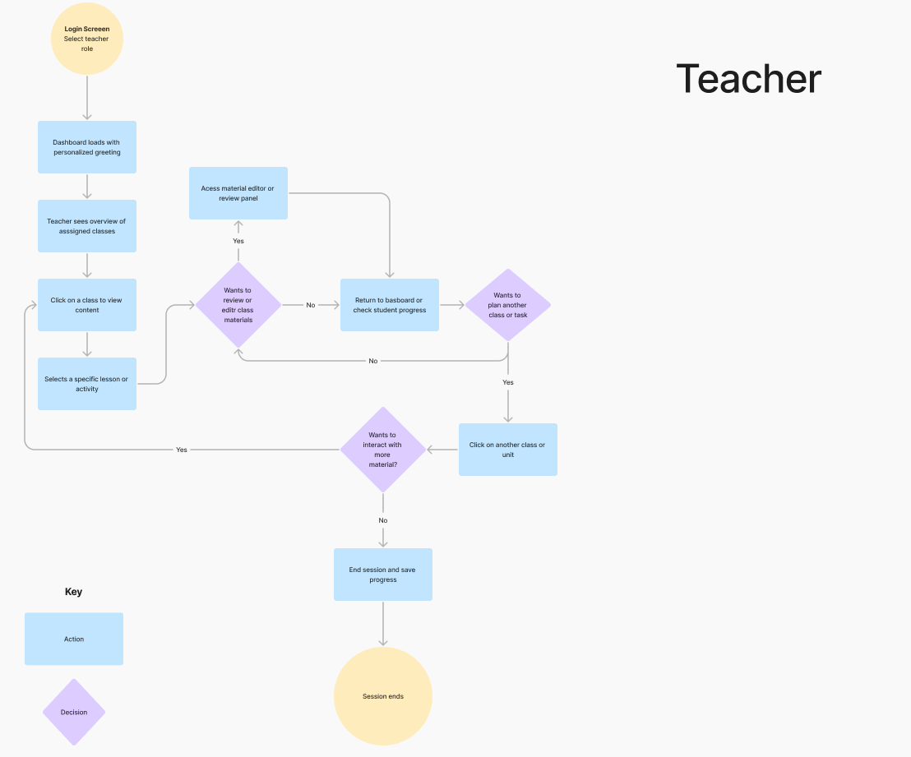
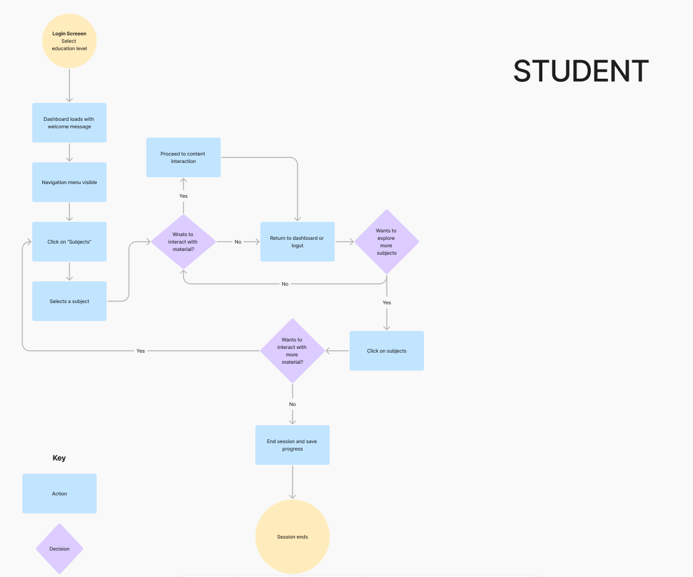
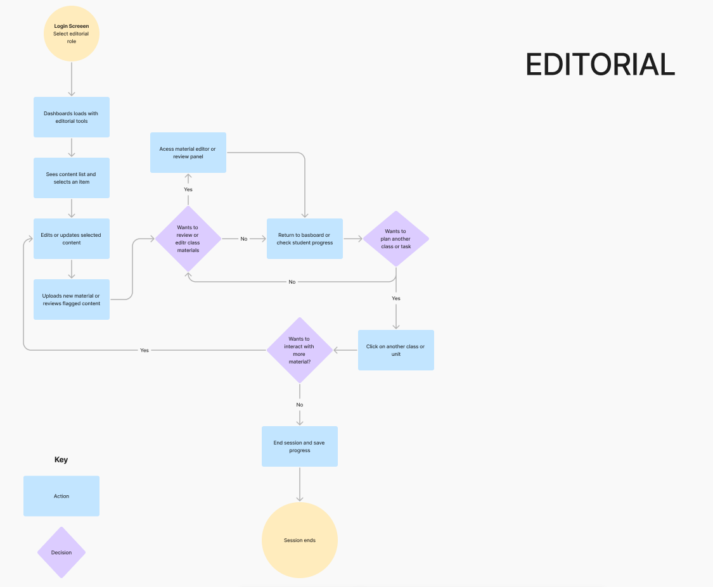

2. Architecture & Ideation
Translating Insights into System Architecture
To resolve the ecosystem fragmentation defined in the discovery phase, I translated our strategic directives into structural blueprints. The goal was to dismantle navigation complexity and design context-isolated structures for each user profile.
The Architectural Overhaul: Consolidated the legacy platform's scattered views into three dedicated navigation paths. By restructuring the Information Architecture (IA), redundant categories were eliminated, ensuring that primary transactional actions (content discovery, task creation, and downloading) require minimal cognitive load.
Task Flow Optimization & Friction Reduction
I mapped and re-engineered core task flows to eliminate the drop-off risks identified during user research, specifically targeting the student authentication barrier and the teacher workflow fragmentation.
Optimizing Student Authentication: The user flows were tailored for shared or low-end mobile devices. I designed simplified credential recovery and persistent session management to bypass the household operational barrier (students waiting for parents' phone access).
Automating Teaching Allocation Loops: Replaced the multi-tool workaround (switching between WhatsApp, Excel, and the platform) by designing a continuous, 3-step automated task creation and grading pipeline.

Teacher workflow focused on task creation and content management.

Student navigation path optimized for content consumption.

Parent experience simplified for monitoring and downloads.
Ideation, Sketches & Feature Selection
To transform user pain points into functional features, I led a rapid ideation phase focused on utility optimization and technical feasibility.
Low-Fidelity Conceptualization: Translated strategic directives into paper sketches and low-fidelity wireframes. This allowed for immediate interaction testing, focusing on creating clean grid layouts for the teacher dashboard and simplified touch targets for the student mobile interface.
Feature Priorization & MVP Scope
Operating under a strict 8-week delivery constraint, I utilized an Impact vs. Feasibility Matrix to establish a ruthless MVP scope. This ensured engineering alignment and prevented scope creep.
High-Impact Priority (MVP): Mobile-first student task trackers, centralized teacher dashboard modules, and core administrative content-upload tools for the editorial team.
Strategic Trade-offs: Advanced internal messaging, deep community forums, and high-fidelity personalization settings were systematically deprioritized for post-launch sprints to protect the core release timeline.
3. Prototyping & UI Design
Scalable Component Architecture
To ensure frontend engineering could execute the 8-week sprint without friction, I established a foundational, modular UI component library.
Built utilizing atomic design principles, ensuring the internal Editorial team can scale layout variations in the future without breaking the grid structure.
Core color palettes and typography scales were strictly audited to meet WCAG 2.1 AA standards, guaranteeing high contrast ratios for low-end mobile screens used by the student cohort.

Executing the MVP Core Flows
The high-fidelity execution focused exclusively on resolving the primary operational bottlenecks identified in the systemic research.

1. Centralized Teacher Dashboard
Replaced fragmented workflows (WhatsApp + Excel) with a unified command center. Teachers can now track cohort performance, grade assignments, and distribute materials within a single cognitive space.

2. Mobile-First Student Experience
Engineered specifically for mobile constraints. Incorporated gamified completion bars and frictionless task-tracking modules to dramatically reduce assignment drop-offs and missed deadlines.

3. Editorial Autonomy Engine
Delivered drag-and-drop structural layouts, entirely eliminating the engineering dependency for routine curriculum updates.